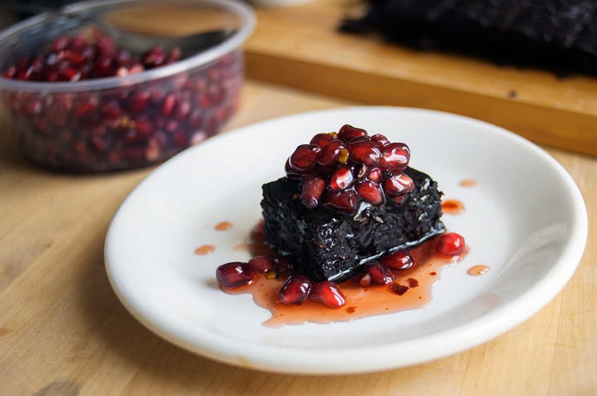

spicy brownies with pomegranate syrup
24 servings — 30 minutes
A brownie recipe with a kick, topped with a chili-infused pomegranate syrup.
I put a LOT of chili pepper flakes in these. You can omit the chilis in the batter, but I recommend keeping it in the pomegranate syrup. It's delicious and won't be the same without it.
You can vary the fruit juice for the topping. Making reductions of fruit juices is very easy, it adds a touch of fancy without too much effort.
Substitutions
Fat : Use 60 g (~1/4 cup) vegan butter instead of oil. If you do this, you'll have to heat the cocoa powder, butter, salt, sugar and spices in a double boiler or any small pan placed over a pot of gently simmering water. When you mix the chocolate/butter mix with the flour, beat vigorously (40-50 strokes) with a spatula so that the fat doesn't separate when baking. Alternatively, you can use coconut oil, but it will alter the base flavor of the brownies in a big way. It's better to use neutral oils, like sunflower. A final option is to use 100% vegan butter, if you want to do this add 145 g (~10 tbsp) to your recipe instead of the canola oil and pumpkin.
Final tip: To prevent burning the bottom of your brownies, place the pan on a preheated cookie sheet. Brownie tips courtesy of the kitchen project.
 flax seeds 15 g, ground
flax seeds 15 g, ground canola oil 75 ml
canola oil 75 ml pumpkin 45 g
pumpkin 45 g granulated sugar 200 g
granulated sugar 200 g cocoa powder 60 g
cocoa powder 60 g salt 1.25 g
salt 1.25 g chili pepper flakes 30 g
chili pepper flakes 30 g cayenne pepper powder 5 g
cayenne pepper powder 5 g all purpose flour 60 g
all purpose flour 60 g
brownies
- Position oven rack on lower-third of oven, and preheat it to 160 °C (325 °F).
- In a small bowl add 15 g (2 tbsp) of ground flax seeds with 90 ml (6 tbsp) of water. Let thicken for 5 minutes.
- In a bowl, combine 75 ml (5 tbsp) of canola oil with 45 g (1/3 cup) of pumpkin purée, 200 g (1 cup) of granulated sugar, 60 g (~3/4 cup) unsweetened cocoa powder and a 1.25 g (1/4 tsp) of salt. Stir until contents are well mixed.
- Stir in the flax 'egg', as well as the 30 g (2 tbsp) of red pepper flakes and 5 g (1 tsp) of cayenne powder. Add 60 g (1/2 cup) of all purpose flour and mix well. Mixture should be thick.
- Grease a 8X8 baking dish with vegetable oil, pour batter and spread evenly. Bake for 20-25 minutes, or until knife comes out with a few moist crumbs. Let cool. Cut in 24 or 16 squares.
- chili pepper flakes 5 g
- cayenne pepper powder 5 g
 pomegranate juice 475 ml
pomegranate juice 475 ml
syrup
- Pour 475 ml (2 cups) of unsweetened pomegranate juice into a pot with 5 g (1 tsp) chili pepper flakes and 5 g (1 tsp) cayenne pepper powder. Bring to a boil, lower to medium-high heat and leave for up to 1h or until liquid has been reduced to half.
- Let cool, the syrup will thicken when cooled.
 pomegranate 2
pomegranate 2
topping
- Top brownies with the seeds, of two fresh pomegranates (read about a technique on how to remove the seeds) and drizzle with the chili-infused syrup!